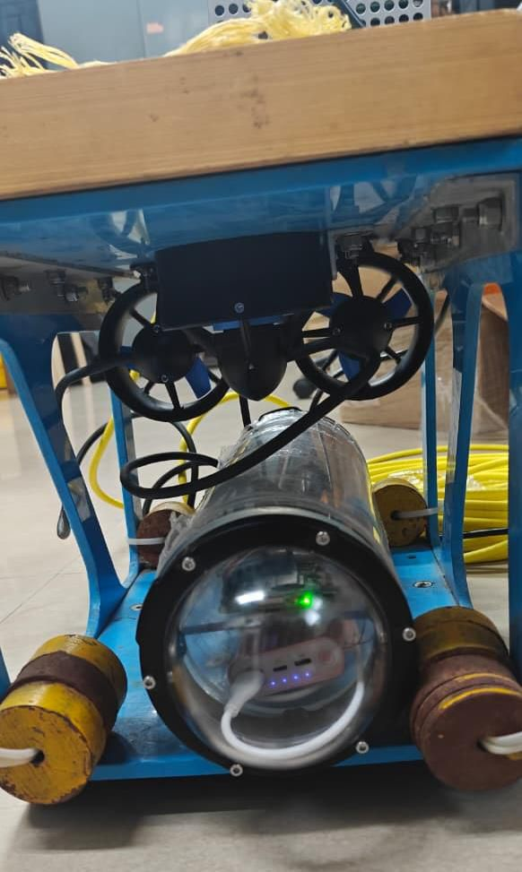
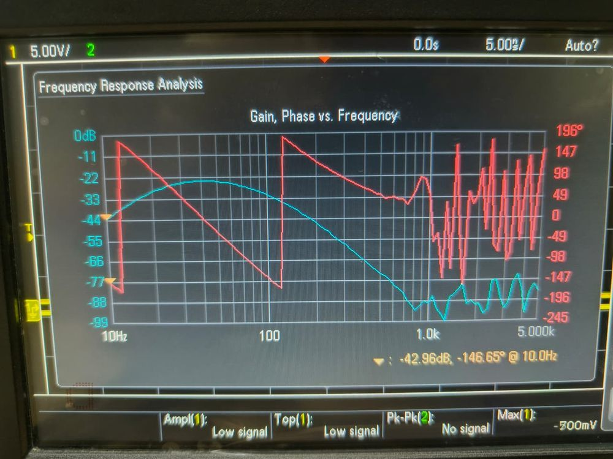
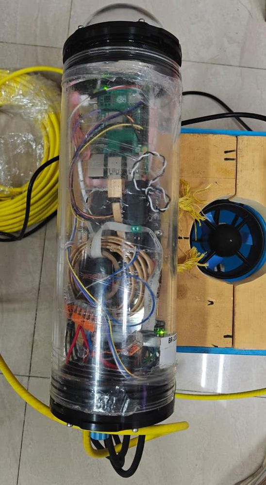

I build intelligent systems for real engineering problems, then measure them properly.
Distributed edge schedulers, physics-informed reconstruction, LLM document pipelines, underwater robots, analog front ends. Software through silicon; every claim below traces to a report, paper, or bench measurement.
A coordinator/worker runtime that schedules CNN inference across SBC nodes using an online cost model — live capability, queue backlog, communication cost, and thermal derating — on a measured Gigabit fabric with K3s and Prometheus/Grafana underneath.
Sparse on-chip thermal field reconstruction under power-model and nonlinear-leakage uncertainty. Three controlled studies against classical data assimilation, a physics-embedded Green’s-basis PINN that fixes spectral-bias collapse, and a closed-form D-optimal sensor placement.
Built at the National Institute of Ocean Technology, Deep Sea Technology Group: a Raspberry Pi 5 vehicle with T200 thrusters, depth and motion sensing, RS485 telemetry, and an operator UI — plus a visible-light link that survives corrupted bits by redundancy and retransmission.

Two-layer document intelligence: deterministic parsing for metadata, grounded LLM reasoning for engineering fields — with full-document OCR arbitration, design-patent handling, guard-railed claim cleanup, per-field confidence, and team routing. Deployed internally for TVSM R&D teams.
FD-MRA: multi-resolution attention over vibration spectra with trainable frequency masks and rotary position embeddings, fused with a 1-D time-domain CNN through a 256-D bottleneck — classifying four fault classes across 0–3 HP variable load at a latency that runs on the machine rather than in the cloud.
No microcontroller anywhere: an electret chestpiece into op-amp gain stages, a 50 Hz notch, and three 4th-order Sallen–Key bandpass paths that isolate heart, lung, and murmur bands — designed on paper, simulated, built, and verified against a bench frequency-response analyzer.

Modular Verilog — FSM game logic, LFSR sequences, debounced 4×4 keypad, clock division from 100 MHz, seven-segment driver. Verified in ModelSim, taken through Vivado synthesis, implementation and DRC sign-off, then deployed to the physical XC7A35T board.
S. Sanjay Subramanyan, S. Sahithya, M. Suprithi, J. P. Anitha. Three controlled studies separating power-model from physics-model uncertainty; a self-consistent Green’s-basis PINN; a training-free D-optimal sensor placement; and a decision rule for practitioners. All code, seeds and metrics released.
I’m an electronics and communication engineer with an AI/ML minor, and the work I like best sits where those meet: a model that has to run on a specific device, a sensor whose physics shapes the estimator, a scheduler whose cost model has to survive real network latency.
The pattern across my projects is the same — build the system end to end, instrument it, and let the measurements decide. Sometimes that means reporting that a classical Gaussian process ties the neural network at a fraction of the compute, and saying so. I’d rather ship the honest number than the flattering one.
Open to remote internships now, and full-time roles from mid-2027 — anywhere the problem involves models meeting hardware.
Final-year project (ongoing) — a runtime that turns a validated Raspberry Pi cluster into an online scheduler for edge-AI workloads. With Shriyaank and S. Sahithya, guided by Dr. Binoy B. Nair.
Two phases. First, recreate a reference Raspberry Pi cluster stack — Ethernet fabric, HPL/Linpack, K3s, Prometheus/Grafana — and measure everything, so the platform itself is validated rather than assumed. Second, build a coordinator/worker runtime on top of it that assigns each inference task to the node expected to finish it first.
Cheap heterogeneous single-board computers on commodity Ethernet break the assumptions cluster schedulers usually make. Node capability differs and drifts; fanless boards thermally throttle under sustained load; and moving data is expensive enough that the network term belongs inside the placement decision, not in a footnote. The scheduler has to learn what nodes can actually do — online, from the tasks themselves — and it has to decide in microseconds, because on a fast fabric a slow scheduler is the bottleneck.
The workload model is task-level partitioning: each webcam frame runs full MobileNet-v2 inference on one node. Splitting a single inference across nodes would shuttle intermediate feature maps over commodity Ethernet — the measured network baseline says that trade is a loss, so the design keeps every task whole and lets placement do the work.
The cluster is dual-homed by design: the laptop stays on Wi-Fi for management, while all worker traffic rides a dedicated Gigabit Ethernet data plane (10.0.0.x). The reference recreation follows Jeff Geerling’s public Pi-cluster automation and benchmark workflow, then verifies each layer manually.
| Layer | Measured | Meaning |
|---|---|---|
| Ethernet fabric | 942 Mbit/s · 0.31 ms · 0 retr. | iperf3 + ping — the scheduler’s communication term is grounded in this |
| Wi-Fi (same hardware) | ≈26 Mbit/s | 36× slower — why the data plane is wired |
| HPL / Linpack, 1 × Pi 4 | 10.20 GFLOPS | Reference figure for the board class is ≈11.9 — right order, validated |
| HPL / Linpack, 2 × Pi 4 | 20.96 GFLOPS · 2.05× | Near-linear scaling for a compute-bound kernel |
| K3s | 2 nodes Ready · 4 replicas 2+2 | Orchestration and self-healing verified |
| Prometheus + Grafana | live node dashboards | CPU, load, memory, disk, temperature during experiments |
Legacy distributed benchmarks carried forward as baselines: prime counting speeds up 1.696× → 1.578× as workloads grow (coordination overhead is visible, then amortized), and a 4000×4000 matrix multiply runs 1.32× faster distributed — a more honest proxy for AI-style arithmetic than embarrassingly parallel primes.
For each task the coordinator estimates every candidate node’s finish time — computation, current backlog, communication cost from measured bandwidth and latency, and a thermal derating factor that shrinks a node’s effective capability past a warning threshold and floors it near throttle. The most distinctive runtime feature is exactly that derating: fanless boards get protected before the silicon throttles them.
| Metric | Value | Implication |
|---|---|---|
| Task split, 210-task MobileNet-v2 run | 105 / 105 | No node favored when cost estimates tie |
| Load-balance efficiency | 1.000 | Tie-spreading logic works |
| Scheduler overhead | ~74 µs / task | Light enough for real-time use — decisions in microseconds, not milliseconds |
| Network + scheduling overhead | ~1.4 ms (~2%) | Communication is not the bottleneck on this workload |
| Learned node capabilities | within 1.5% | Identical hardware converges to a natural tie |
The current measured platform is two identical, cool Pi 4 nodes. On that hardware there is no heterogeneity to exploit, so AdaptiveMCT correctly ties RoundRobin and the static baseline — a validation of scheduler neutrality, not evidence of advantage. The expected win appears when Pi 3 nodes introduce genuine capability differences and when thermal stress activates the derating path. Those experiments are pending, and the report says so explicitly.
This is deliberate scientific sequencing: establish a correct, perfectly balanced baseline first, so any separation measured later is attributable to the policy rather than to platform noise.
Sparse on-chip thermal field reconstruction under power-model and nonlinear-leakage uncertainty — with S. Sahithya, M. Suprithi and J. P. Anitha. Manuscript, August 2026; all code, seeds and metrics released.
A deployed chip exposes a handful of noisy on-die sensors, and the physics model driving any reconstruction is itself wrong: the power map is a nominal estimate, and leakage rises nonlinearly with temperature. The chip-thermal PINN literature demonstrates accurate forward analysis — but rarely compares against the classical alternative: solve the nominal physics, fit a Gaussian process to the sensor residual, add it back. This work stages that comparison honestly, three ways.
| Method (N = 20 sensors) | ρ = 0% | 5% | 10% | 15% | 20% |
|---|---|---|---|---|---|
| PINN | 0.424 | 0.436 | 0.483 | 0.506 | 0.601 |
| Physics-mean GP (assimilation) | 0.214 | 0.345 | 0.475 | 0.629 | 0.574 |
| Physics only (no sensors) | 1.086 | 2.407 | 5.552 | 8.555 | 11.617 |
The GP matches or beats the PINN at four of five mismatch levels — while running in under a second on a CPU against minutes on a GPU. Two to three orders of magnitude in compute for the same accuracy. In the smooth, linear regime the network confers no benefit, and the paper says so plainly.
Temperature-dependent leakage is a positive feedback: heat raises leakage, which raises heat. Model it as an unknown coefficient β, drop to eight sensors, and the PINN — treating β as a trainable parameter constrained through the coupled residual — holds nearly flat (0.82–1.09 K) while pure physics degrades eighteen-fold and even the GP triples (0.40 → 1.34 K). The curves cross near β* ≈ 0.10.
Uniquely, the PINN also returns a physical quantity no baseline can produce: the leakage coefficient itself, recovered from eight noisy sensors while reconstructing the field. Robustness held under an independent bilinear FEM reference (margin widens: 0.95 vs 1.33 K), doubled sensor noise (β̂ within ±0.003), and a five-member deep ensemble whose predictive σ brackets actual error.
On the published 19-block EV6 layout the freeform PINN fails outright — spectral-bias collapse to ≈8 K MAE even with the physics exactly known. The fix is architectural: precompute each block’s Green’s-function response once, write the field as a per-block Green’s expansion, and let leakage live on the same physical basis, solved to self-consistency inside the forward pass (SC-GB-PINN). Hard physics constraints, Nblocks+1 free parameters.
| Method (β* = 0.12, FEM truth) | SimpleSix | EV6 (19 blocks) |
|---|---|---|
| Physics-mean GP | 1.32 | 2.57 |
| Vanilla PINN | 1.41 | 8.04 |
| GB-PINN (prior only) | 1.20 | 2.34 |
| SC-GB-PINN | 1.01 | 1.01 |
At β* = 0 the SC-GB-PINN is not the best method (0.57–0.76 K vs 0.31–0.40 K for GP and GB-PINN) — its leakage machinery is dead weight when there is nothing to infer. The win is regime-specific, and reporting where a method loses is what makes the comparison believable.
Because SC-GB-PINN reduces reconstruction to a few per-block parameters, its sensitivity at any location is available in closed form — so choosing the eight positions that maximize the Bayesian D-optimal criterion needs no training at all. On EV6 that drives error to 0.60 K — the lowest in the work — and 0.97 K on the simple chip, while shrinking variance roughly six-fold. And a cautionary measured result: clustering all sensors on the hotspots is catastrophic for the statistical baseline (19→24 K), because it starves the cool interior. Coverage, not intuition, matters — the criterion balances it automatically.
The mechanism generalizes: a smoother treats physics as fixed and interpolates what sensors leave over; a PINN reshapes the physics through a trained parameter. Flexibility is dead weight exactly when classical methods already fit the physics.
Research internship, Deep Sea Technology Group, National Institute of Ocean Technology (Ministry of Earth Sciences), Chennai — April 2026, with Rithish K, guided by Mr. R. Ramesh, Scientist-F.
The Mini ROV integrates Blue Robotics T200 thrusters with ESCs, a depth/pressure sensor, an Xsens motion sensor, and a Raspberry Pi 5 controller inside a 4-inch pressure housing — talking to a laptop operator station over RS485, chosen for robust long-distance wired communication.

My work was hardware integration, software interfacing and the operator UI: acquiring depth and motion data on the Pi, streaming telemetry to the laptop interface in real time, and carrying operator commands back down to the propulsion system.
Each subsystem was integrated independently against the same interfaces — which is what made a one-month build feasible, and what the report credits for maintainability. Power design: a 20 V source for the thrusters through ESCs, with the Pi 5 fed by a buck converter so control stays stable while motors draw current.
The companion project: optical wireless communication on Arduino Uno — an LED transmitter and photodiode receiver on AltSoftSerial, run deliberately slow (300 bps on the optical channel) for stability. The interesting part is the fault tolerance added on top:
From the loopback test log in the report — ambient interference corrupts the message on two attempts; bit-level correction plus retransmission recovers it exactly on the third:
Optical loopback with automatic retransmission on error --- New message: "Rithish" --- Attempt 1/5 Char 0 corrected bits: 4 6 · Char 1: 3 5 6 · Char 2: 5 6 7 Mismatch: sent="Rithish", received="Ra√ø√ø√ø" >>> Retransmitting in 200 ms... Attempt 2/5 Char 0: 1 6 · Char 2: 2 3 4 7 · Char 3: 6 7 · Char 4: 4 Mismatch: sent="Rithish", received="0i00000" >>> Retransmitting in 200 ms... Attempt 3/5 Char 4 corrected bits: 0 · Char 6 corrected bits: 3 >>> SUCCESS: Message received correctly. Message successfully transmitted after 3 attempt(s). Final received: "Rithish"
The log makes the design case better than prose could: single-shot transmission fails in ambient light, and the redundancy + ARQ layer turns an unreliable channel into a reliable one.
AI/ML internship, TVS Motor Company, Hosur — May–June 2026. An LLM-based system that turns Indian patent PDFs into structured engineering intelligence. Deployed internally for TVSM R&D teams.
Patent PDFs arrive as messy, inconsistent documents — some born-digital, some scanned, some design-only with no utility claim at all. Engineers need the same things from each: metadata, the independent claims, what the invention actually does, its benefits and failure modes, and which engineering team should see it. Doing that manually doesn’t scale; doing it with a single naive LLM prompt hallucinates.
The split is the design decision: anything with a reliable textual signature — application numbers, dates, assignees, claim boundaries — is extracted deterministically and never touches the model. The LLM works only on grounded evidence windows, generates the analytical fields in parallel, and every output passes a validation gate (word counts, no reference numerals, no comparator conflicts with evidence, no prompt leakage) with an automatic repair loop when a rule trips. Typical run: 12–20 LLM calls, 30–60 seconds per patent.
Claims are legal text, so the pipeline keeps the verbatim claim untouched and adds a separate OCR-cleaned rendering — produced by the LLM but accepted only if it passes safety checks: similarity to the raw text ≥ 0.75, no contiguous edit longer than 45 characters, at most one invented numeral. Fail any check and the system falls back to raw. Every analytical field ships with a confidence score and evidence count, and review flags mark anything a human should re-check.
The system is designed to be auditable: a reviewer can see what was extracted deterministically, what the model wrote, from which evidence, at what confidence — and what tripped a flag. That’s the difference between a demo and a tool a company actually uses.
Deployed internally for TVSM R&D teams. Details that are TVS-internal — endpoints, prompts, the full output schema — stay internal; what’s described here is the engineering approach.
FD-MRA: frequency-domain multi-resolution attention for vibration-based fault classification under variable load, fused with a time-domain CNN.
Bearing faults write themselves into vibration spectra — but the writing shifts with operating load. A model that memorizes one load’s spectral fingerprint collapses on another. The goal is a classifier that attends to fault-characteristic frequency structure robustly across 0–3 HP, and runs fast enough to live at the machine.
The frequency branch is the contribution: attention at multiple spectral resolutions, rotary position embeddings so harmonic spacing (not absolute bin position) carries the signal, and trainable frequency masks that learn which bands matter — instead of hand-picking envelope bands per fault type. Measured post-bottleneck inference is 0.8 ms, comfortably edge-deployable.
Four fault classes under 0–3 HP variable load. The load variation is the part that matters: it is the condition where naive detectors degrade, because the spectral signature shifts for entirely benign reasons and a model that memorised one load’s fingerprint has nothing left to stand on.
The 0.8 ms post-bottleneck figure is what makes it deployable — fast enough to run at the machine rather than shipping vibration data to a server and waiting on a round trip.
The conventional approach to bearing diagnosis picks envelope bands by hand from the fault characteristic frequencies — which works until the load shifts and those bands move. Making the masks trainable, and using rotary embeddings so harmonic spacing carries the signal rather than absolute bin position, moves that choice from the engineer’s prior into the data.
The other lasting output is a habit: evaluation design is part of the architecture. Condition-aware partitions and no window overlap across splits are now my defaults, and a surprisingly high score is something I treat as a bug until I have proven otherwise.
Open Laboratory project, Amrita ECE — with S. Sahithya and Shriyaank R. Fully analog auscultation: capture, amplify, notch out the mains, split into physiological bands, sum, and listen.
Digital stethoscopes solve auscultation with microcontrollers — adding cost, complexity and a power budget. The design brief here: isolate heart (30–140 Hz), lung (140–400 Hz) and murmur (400–1000 Hz) bands, suppress 50 Hz mains interference, and drive headphones — using nothing programmable. Every behavior must come from component values.
Each band is an independent path: a 4th-order Sallen–Key high-pass into a 4th-order low-pass, values derived by hand (fc = 1/2πRC — e.g. 30 Hz → 5.3 kΩ, 140 Hz → 11.4 kΩ, 400 Hz → 3.98 kΩ, 1 kHz → 1.59 kΩ at 0.1 µF), built around TL072/LM324 op-amps. Slide switches route any combination of bands into a two-stage summing amplifier; the output buffer drives headphones directly, so no separate power amplifier exists to add its own noise.
| Path | Designed band | Obtained band | Center | Gain |
|---|---|---|---|---|
| Heart | 30 – 140 Hz | 34 – 160 Hz | 73.7 Hz | ~24 dB |
| Lung | 140 – 400 Hz | 144 – 432 Hz | 249.4 Hz | ~12 dB |
| Murmur | 400 – 1000 Hz | 432 – 1060 Hz | 689.4 Hz | ~12.8 dB |
| Notch | 50 Hz target | 49.8 Hz | — | −12.6 dB |
Obtained corners run a few percent above design across the board — consistent with component tolerance — while band ordering, isolation and the notch all land where the arithmetic said they would. Simulation first; then the oscilloscope has the final word.
The gap between designed and obtained corners is the education: real capacitors and resistors move your poles, and layout choices — ground pour, short high-gain traces, separated analog return — decide whether a high-gain audio chain hums or stays quiet. The final validation was the honest kind: a live acoustic end-to-end test, band switch by band switch.